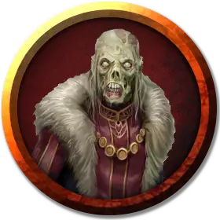

Бессмертный советник
Undying Councilor
Средняя Нежить, нейтрально-добрая

Класс Доспеха 17 (природный доспех)
Хиты 104 (16к8 + 32)
Скорость 30 футов
| мод | спас | ||
|---|---|---|---|
| СИЛ | 16 | +3 | +3 |
| ЛОВ | 10 | +0 | +0 |
| ТЕЛ | 14 | +2 | +6 |
| мод | спас | ||
|---|---|---|---|
| ИНТ | 17 | +3 | +7 |
| МДР | 21 | +5 | +9 |
| ХАР | 16 | +3 | +3 |
Навыки Восприятие +9, История +11, Магия +7, Проницательность +9, Религия +7
Уязвимость к урону некротическая энергия
Иммунитет к урону излучение, яд
Иммунитет к состояниям отравление, паралич, очарование, испуг, истощение
Чувства тёмное зрение 120 футов, пассивное Восприятие 19
Языки Общий, Эльфийский
Опасность 10 (5900 опыта)
Бонус мастерства +4
Особенности
Сияющая аура. Советник волшебным образом излучает яркий свет в радиусе 15 футов и тусклый свет еще в 15 футов. Советник может погасить или восстановить этот свет бонусным действием. Если яркий свет пересекается с областью тьмы, созданной заклинанием 3-го уровня или ниже, заклинание, создающее эту тьму, рассеивается.
Сопротивление магии. Советник совершает с преимуществом спасброски от заклинаний и прочих магических эффектов.
Врожденное колдовство. Советник является заклинателем 13-го уровня. Его базовой характеристикой является Мудрость (Сл спасброска от заклинания 17, +9 к попаданию атаками заклинаниями). У него подготовлены следующие заклинания жреца:
• Заговоры (неограниченно): указание, починка, священное пламя, уход за умирающим, чудотворство
• 1 уровень (4 ячейки): благословение, приказ, сотворение или уничтожение воды
• 2 уровень (3 ячейки): гадание, умиротворение, удержание личности
• 3 уровень (3 ячейки): дневной свет, рассеивание магии, духовные стражи
• 4 уровень (3 ячейки): изгнание, предсказание, страж веры
• 5 уровень (2 ячейки): рассеивание зла и добра, небесный огонь, наблюдение
• 6 уровень (1 ячейка): запрет, планарный союзник
• 7 уровень (1 ячейка): уход в иной мир
Действия
Мультиатака. Советник совершает две атаки Сияющим касанием.
Сияющее касание. Рукопашная атака заклинанием: +9 к попаданию, досягаемость 5 футов, одна цель. Попадание: 15 (3к6+5) урона излучением.
Целебное касание (3/день). Советник прикасается к другому существу. Цель магическим образом восстанавливает 18 (3к8 + 5) хитов и избавляется от одного проклятия, поражающего её (по выбору советника).
Небесный огонь (заклинание 5-го уровня, расходует ячейку). Советник выбирает цель в пределах видимости на расстоянии 60 футов. Все существа в цилиндре с радиусом 10 фт. и высотой 40 фт. с центром на точке в пределах дистанции должны совершить спасбросок Ловкости Сл 17. Существо получает урон 4к6 урона излучением и 4к6 урона огнём в случае провала и половину урона в случае успеха. Если советник накладываете это заклинание, используя ячейку 6-го уровня или выше, урон излучением или урон огнём (по выбору советника) увеличивается на 1к6 за каждый уровень ячейки выше пятого.
Легендарные действия
Советник может использовать 2 легендарных действия. Одновременно может использоваться только одно легендарное действие и только в конце хода какого либо существа. Советник восстанавливает легендарные действия в начале каждого своего хода.
Касание. Советник делает одну атаку Сияющим касанием.
Мерцающая аура (стоит 2 действия). Советник направляет положительную энергию в свою сияющую ауру. До конца своего следующего хода советник излучает яркий свет в радиусе 30 футов и тусклый свет еще на 30 футов. Каждое существо, начинающее свой ход в ярком свете должно преуспеть в спасброске Телосложения Сл 17, иначе оно становится ослеплённым до конца следующего хода советника.
Описание
Бессмертные советники направляют и защищают народ Аэренала. Они самые могущественные члены Бессмертного двора, которые всё ещё сохраняют свою физическую форму. В то время как многие бессмертные советники проводят свои дни, консультируя живых, некоторые посвящают годы проецированию своего сознания на астральный план, ища новые знания, чтобы поделиться ими со своим народом. Тем не менее, не каждый разум способен принять бессмертие, и бессмертные советники иногда сходят с ума.
Бессмертные - это нежить, поддерживаемая положительной энергией или преданностью смертных существ. Там, где сильные отрицательные эмоции могут поймать дух в ловушку в виде призрака или приведения, появляются бессмертные - это духи, которые задерживаются, потому что их лелеют, и которые, в свою очередь, стремятся защитить и направить людей своей общины.
Хоть бессмертные и могут появиться в любом месте, для них это редкость. Единственное место, где они встречаются в значительном количестве, - это остров Аэренал, земля, чьи тесные связи с планом Ириана наполняют ее положительной энергией. Эльфы Аэренала потратили тысячи лет на разработку ритуалов, которые используют эту энергию, позволяя им сделать своих величайших граждан бессмертными.
Связанные любовью и светом. Бессмертные поддерживаются положительной энергией, независимо от того, находятся ли они в зонах проявлений, связанных с Ирианом - например, в Шае Мордай, Городе мертвых Аэрени - или свободно питаются преданностью смертных существ. Поклонение Бессмертному двору - это то, что поддерживает бессмертие Аэренала, но преданность - это ключевой ресурс. Таким образом, каждый эльф, который становится бессмертным, должен заслужить свою загробную жизнь. Если Бессмертный эльф покидает Аэренал, то ему требуется сообщество эльфов или другой источник положительной энергии, чтобы поддерживать его. В противном случае его свет угасает, и он в конце концов умирают.
Самые могущественные из бессмертных могут отделить свои души от физических форм, существуя как существа чистого света. Это состояние является конечной целью эльфов Аэренала, и такие существа известны как высшие советники.
Бессмертный двор. Почтенная нежить Аеренала объединилась в Бессмертном Дворе. Находясь в городе Шае Мордай, члены Бессмертного Двора проводят свое время в медитации, занимаются исследованиями или продолжают совершенствовать искусство, которое они практиковали в жизни. Они служат проводниками и советниками для живых, и члены благородных семей Аеренала могут совершить ритуал совета, чтобы проконсультироваться с предками в Шае Мордай. Величайшие члены Бессмертного двора - высшие советники. Эти существа чистого света сосредоточены на созерцании тайн жизни и планов и могут работать вместе, чтобы обладать божественной силой, которая позволяет им защищать Аэренал почти от любой угрозы. Однако высшие советники могут осуществлять свои планы за пределами Аеренала действуя только через преданных смертных - паладинов и жрецов Бессмертного двора.
Природа нежити. Бессмертные не нуждаются в воздухе, еде, воде или сне.